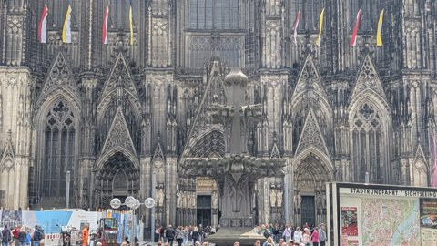
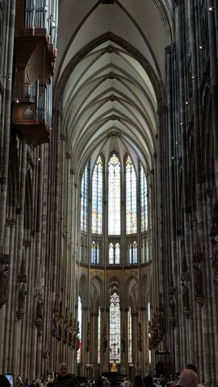
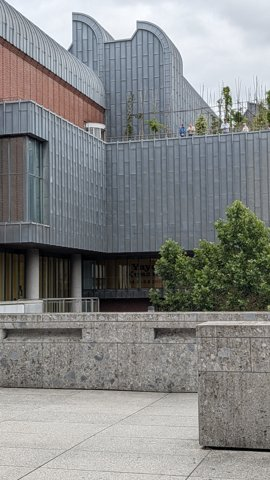

This map shows 17 of the most-searched sights in Cologne as photo spots, ranked by how often people search for them: Cologne Cathedral, Köln Hauptbahnhof, Chocolate Museum, Cathedral Interior and Museum Ludwig lead the list. Every spot has a pin on the subject and a phone icon showing where to stand, with tips for shooting it on your phone: which lens to use, how to frame it, a settings tip and the best time of day. Directions and Navigate buttons take you to the standing point on foot or by public transport. 3 spots are free to view; the full map is for members.
The 3 free photo spots
1Cologne Cathedral

Cologne Cathedral (the Kölner Dom) is the great Gothic church that dominates the city, and it is easy to see why it is the first spot on this map. Its two spires reach 157 m, which makes it the tallest twin-spired church in the world. Together they give it the largest façade of any church. Building began in 1248 and stopped around 1560. Work started up again in the 1800s, and the cathedral was finished to its original medieval plan in 1880. It became a World Heritage Site in 1996 and is Germany's most visited landmark, so expect company. It was built to house the Shrine of the Three Kings, a medieval goldsmith's masterpiece. The cathedral photographs well because of its sheer scale and the dark, finely carved stonework, which gives your picture texture even in flat light. The challenge is fitting it all in. Stand back, keep your phone upright and level, and let the two towers frame the shot. Then step closer for details such as pinnacles, carvings and the doorways. Check the official site before you go if you plan to go inside or visit anything beyond the outside.
Where it is: The cathedral stands in Cologne, North Rhine-Westphalia, Germany. It is a large landmark, with an outline about 170 m across.
Shooting it on your phone
Lens: Start with the ultra-wide (0.5x) for the full façade, then use the default lens (1x) for a calmer, less stretched view. Use the telephoto (2x-5x, depending on your phone) for the spires and stone detail.
Where to stand: Stand about 90 m west of the subject, at the phone icon on the map, and face east. The cathedral lies to the east of that point.
Framing: Switch on gridlines and line the two towers up with the vertical lines. Hold the phone upright and level so the towers do not lean inwards. If you cannot fit the whole building in, go for a tall portrait-format shot of the façade rather than tilting the phone up. Add a person or a row of passers-by at the bottom to show the scale.
Settings tip: Tap the stone to focus, then slide the exposure down a little so the sky does not turn white. Use night mode after dark and hold the phone steady against a railing or wall. Avoid panorama here, because moving people can cause odd stitching.
Best time: Early morning or late afternoon usually means softer light and fewer people. After dark, night mode is worth trying.
4Cologne Cathedral Interior

Step inside Cologne Cathedral and the first thing you notice is the height. The tall, narrow space pulls your eye upward, and the long view down the middle of the building gives a phone photo strong lines and a real sense of scale. Coloured light from the large windows adds to it. This is a place for wide, calm frames, and for small details such as carved stonework, candles and patches of window colour.
The ultra-wide lens (0.5x) suits the main view, because it fits in the height and both side walls. Turn on the gridlines and line them up with the tall columns so the verticals stay straight rather than leaning inwards. The default lens (1x) works well for a more natural view of a single arch or a quiet corner. For details high up, or a close look at a window, try the telephoto/zoom (2x-5x, depending on your phone) and hold the phone steady against your body.
It is a working place of worship and usually busy, so be patient. Wait for a gap in the crowd, keep your voice low and don't block the aisles. Rules on photography, bags and entry can change, so check the official site before you go.
Where it is: In the centre of Cologne.
Shooting it on your phone
Lens: Start with the ultra-wide (0.5x) for the full height and length of the space. Switch to the default lens (1x) for single arches and people, and to telephoto/zoom (2x-5x, depending on your phone) for windows and carved details.
Where to stand: Stand about 45 m west of the subject, at the phone icon on the map, and face east. Take your interior photos once you are inside, looking east along the main space, and stay out of the aisles and any roped-off areas.
Framing: Stand centrally and turn on the gridlines. Line up the tall columns with the vertical lines so the building looks straight. Keep the phone level, then tilt it slightly upward only if you want to show more of the vault. For a second picture, move in close to a window or a pillar and use portrait mode or the telephoto for a detail shot.
Settings tip: Tap to focus on a mid-tone part of the wall, then lower the exposure slider a little so the bright windows keep their colour. If it is dim, night mode can help, but rest your elbows against your body or a solid ledge and keep still. Turn off the flash.
Best time: Daytime, when the windows are brightest, is usually best. Early in the day or late in the afternoon is often quieter, but check the official site for visiting times before you go.
9Romano-Germanic Museum

The Romano-Germanic Museum is Cologne's archaeological museum, built around the remains of a Roman town villa. It opened in 1974 on the site of a 3rd-century villa that was found in 1941. The Dionysus mosaic, from around A.D. 220/230, still lies where the Romans laid it. The museum also holds what is described as the world's largest collection of Roman glass vessels.
For a phone photo, the appeal is the setting rather than the museum alone. The building is low and modern, and Cologne Cathedral rises directly behind it. That is the classic view of the museum, and it shows how the Roman site sits right beside the cathedral.
The main building has been closed for a full renovation since 2018, so the front may be partly hidden by works. The collection is shown for now at the Belgian House on Cäcilienstraße 46, a different building that is not part of this photo spot. Take the picture as a view of the square, the museum and the cathedral together. Keep the phone upright if you want the full height of the cathedral, or turn it sideways to include the width of the frontage. If the front is screened, use the cathedral as your main subject and let the museum sit low in the foreground.
Where it is: In the centre of Cologne, on Roncalliplatz directly south of Cologne Cathedral. The museum stands right beside the cathedral.
Shooting it on your phone
Lens: Start with the ultra-wide (0.5x) to take in the low museum frontage and the cathedral together. Switch to the default lens (1x) for a calmer, more natural view. Try telephoto (2x or more, depending on your phone) for a tighter shot of the cathedral towers behind the building.
Where to stand: Stand in Roncalliplatz (in front of the museum's facade, with the cathedral behind). The low museum building in the foreground with Cologne Cathedral rising behind it, the classic framing of the museum.
Framing: Put the low museum building across the bottom of the picture and let the cathedral fill the space above it. Turn on gridlines and keep the horizon level, so the cathedral does not lean. Hold the phone upright for the cathedral's height, or sideways for the frontage. If scaffolding or hoardings cover the front, make the cathedral your main subject and use the museum as a foreground band.
Settings tip: Tap on the cathedral to set focus, then slide the exposure down a little if the sky is bright so the stonework keeps its detail. Use panorama only if you stand still and move the phone slowly.
Best time: Soft light earlier or later in the day suits the cathedral stonework better than harsh midday sun.
14 more spots for members
These spots are on the map as grey numbered pins. Where to stand, the phone tips, photos and directions for them come with Explorer membership.
- 2Cologne Central Station · members
- 3Chocolate Museum · members
- 5Museum Ludwig · members
- 6Alter Markt · members
- 7Great St. Martin Church · members
- 8Hohenzollern Bridge · members
- 10Cologne City Hall · members
- 114711 House · members
- 12Basilica of St. Ursula · members
- 13Rheinauhafen Crane Houses · members
- 14St. Gereon's Basilica · members
- 15Rhine Promenade Deutz · members
- 16Cologne Tower · members
- 17KölnTriangle Viewing Platform · members
Get every spot with Explorer membership
Explorer opens every spot on every map in the library: where to stand, how to frame it on your phone and how to get there, plus the Xdatrys Maps app with maps saved on your phone for use without signal. $9.99 a month or $59.99 a year; cancel any time.
Join Explorer Compare free and Explorer
Not ready to join?
Get Pocket Lens, our free daily smartphone travel photography newsletter.
Free, and you can unsubscribe at any time. If the form does not show, sign up on our newsletter page.
Questions
What are the top photo spots in Cologne?
The first three on this map are Cologne Cathedral, Köln Hauptbahnhof and Chocolate Museum. They are ranked by how often people search for them. The full map has 17.
Where should I stand to photograph Cologne Cathedral?
Stand about 90 m west of Cologne Cathedral, at the phone icon on the map, and face east. Start with the ultra-wide (0.5x) for the full façade, then use the default lens (1x) for a calmer, less stretched view.
When is the best time to photograph Cathedral Interior?
Daytime, when the windows are brightest, is usually best. Early in the day or late in the afternoon is often quieter, but check the official site for visiting times before you go.
How do I get to Romano-Germanic Mus.?
Start from Cologne Cathedral, which is right next to it, and walk to Roncalliplatz on its south side.
Credits
Map data © OpenStreetMap contributors (ODbL); base map built with Protomaps from OpenStreetMap data. Photos from Wikimedia Commons, credited under each photo with their licence. Background reading for the free spots: Cologne Cathedral, Romano-Germanic Museum (Wikipedia, CC BY-SA). Access rules and opening times change: check before you go.